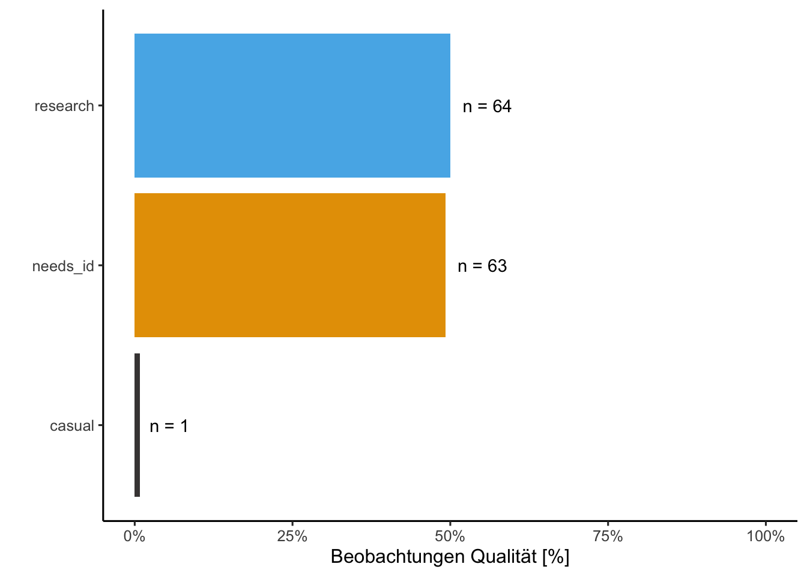
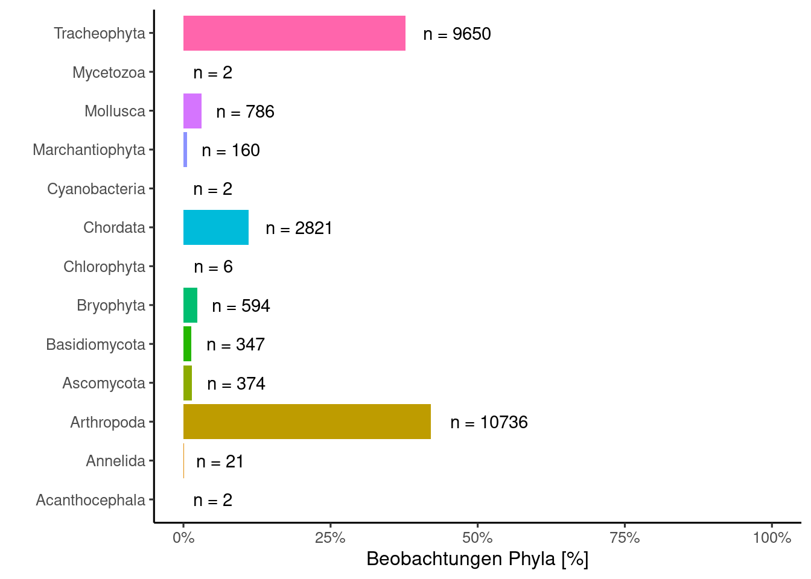
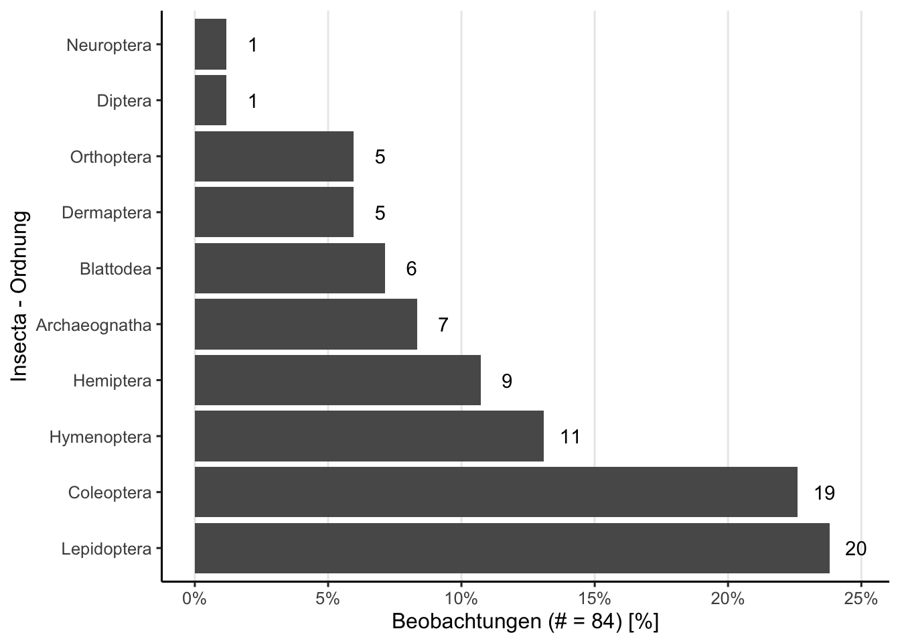

City Nature Challenge 2022: Graz
Demo 2022
Statistik
- Anzahl Beobachtungen: 25547
- Anzahl Beobachter: 133
- Beobachtungen pro Beobachter (Mittelwert / Median): 192.1 / 44
- Anzahl unterschiedlicher Arten auf Spezies Niveau: 2124
Top 10 Beobachter/innen
Top 10 Taxa (Spezies Level)
Unique Taxa mit Research Qualität
Beobachtungs Qualität

Beobachtungen Phylum

Insecta - Ordnungen

Beobachtungen mit Konflikt Bestimmungen
Rote Liste
Anmerkung: Beinhaltet die Rote Liste aller EU Länder.